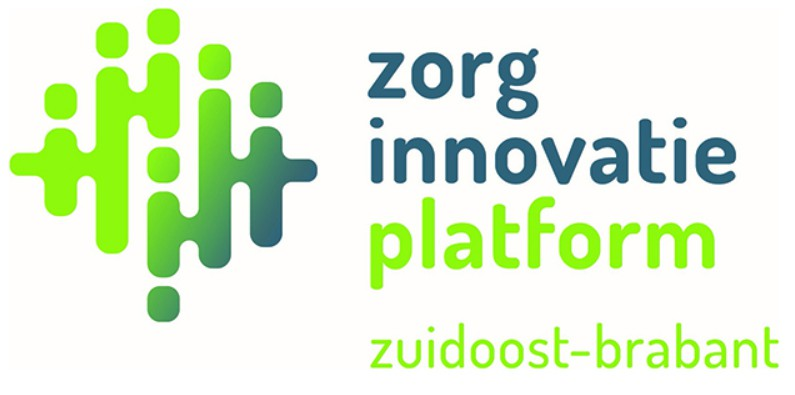

<div class="container mb-5">

  <!-- First row  -->
  <div class="row align-items-center justify-content-center">

    <div class="col-sm d-flex justify-content-center bg-primary border rounded mb-3">
      <div class="w-100 ">
        <div class="row align-items-center justify-content-center p-0 ">
          <h5>Nieuwe zoek opdrcht </h5>
        </div>

        <div class="row align-items-center justify-content-center p-0  ">
          <span id="icon" style="color: rgb(13, 17, 24);">
            <i class="fas fa-eye fa-7x"></i>
          </span>
        </div>
      </div>
    </div>

    <div class="col-sm d-flex justify-content-center  ">
      <h3 class="">Op welke domein wil jij de cliënt ondersteuning?</h3>
    </div>

    <div class="col-sm  d-flex justify-content-end">
      
    </div>

  </div>

  <!-- Second row  -->

  <div class="row my-3 ">

    <!-- Emotioneel & welzijn -->
    <div class="col-sm p-0 mr-5 mb-3 ">
      <button class="btn btn-outline-primary btn-lg w-100 " type="button" (click)=handleEmotioneelWelzijn()>
        Emotioneel <br>welzijn <br>
        <i class="fas fa-smile fa-5x"></i>
      </button>
    </div>

    <!-- Communicatie & interactie -->
    <div class="col-sm p-0 mr-5 mb-3 ">
      <button class="btn btn-outline-primary btn-lg w-100" type="button">
        Communicatie <br>& interactie <br>
        <i class="fas fa-comments fa-5x"></i>
      </button>
    </div>

    <!-- Gezondheid -->
    <div class="col-sm p-0 mr-5 mb-3 ">
      <button class="btn btn-outline-primary btn-lg w-100" type="button">
        Gezondheid <br><br>
        <i class="fas fa-heartbeat fa-5x"></i>
      </button>
    </div>

    <!-- Sociale relaties en contact -->
    <div class="col-sm p-0 mr-5 mb-3 ">
      <button class="btn btn-outline-primary btn-lg w-100" type="button">
        Sociale relaties <br>en contact <br>
        <i class="fas fa-user-friends fa-5x"></i>
      </button>
    </div>

    <!-- Stimuleren van beweging -->
    <div class="col-sm p-0 mr-5 mb-3 ">
      <button class="btn btn-outline-primary btn-lg w-100" type="button">
        Stimuleren <br>van beweging <br>
        <i class="fas fa-walking fa-5x"></i>
      </button>
    </div>

    <!-- Financiering -->
    <div class="col-sm p-0 mr-5 mb-3 ">
      <button class="btn btn-outline-primary btn-lg w-100" type="button">
        Financiering <br><br>
        <i class="far fa-money-bill-alt fa-5x"></i>
      </button>
    </div>

    <!-- Zelfstandig wonen -->
    <div class="col-sm p-0 mr-5 mb-3 ">
      <button class="btn btn-outline-primary btn-lg w-100" type="button">
        Zelfstandig <br>wonen <br>
        <i class="fas fa-home fa-5x"></i>
      </button>
    </div>

    <!-- Toezicht & veiligheid -->
    <div class="col-sm p-0 mr-5 mb-3 ">
      <button class="btn btn-outline-primary btn-lg w-100" type="button" (click)=handleToezichtEnVeiligheid()>
        Toezicht <br>& veiligheid <br>
        <i class="fas fa-key fa-5x"></i>
      </button>
    </div>

    <!-- Zelfbepaling -->
    <div class="col-sm p-0 mr-5 mb-3 ">
      <button class="btn btn-outline-primary btn-lg w-100" type="button">
        Zelfbepaling <br><br>
        <i class="fas fa-user-shield fa-5x"></i>
      </button>
    </div>

    <!-- Persoonlijke ontwikkeling -->
    <div class="col-sm p-0 mr-5 mb-3  ">
      <button class="btn btn-outline-primary btn-lg w-100" type="button">
        Persoonlijke<br>ontwikkeling <br>
        <i class="fas fa-user-cog fa-5x"></i>
      </button>
    </div>

  </div>

  <!-- Fourth row  -->


</div>